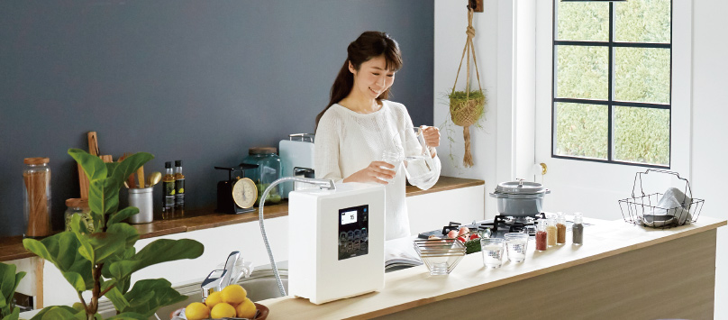
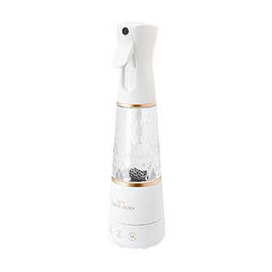
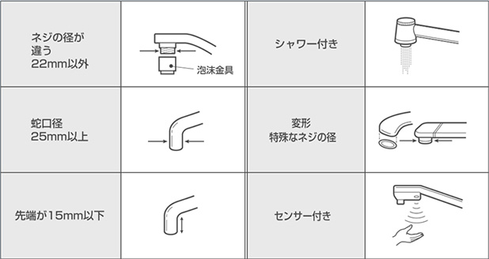
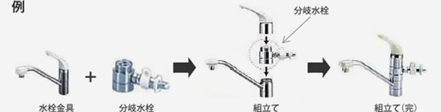

Electrolytic Hydrogen Water
Generator / Functional Water

* For customers using the Fuji Medical Instrument Trevi Series (PDF file will open) *

11 types of water can be made, including alkaline ionized water, which is effective in improving gastrointestinal symptoms.
Medical device certification number:
231AKBZX00005000
Click here for details

Electrolyzed hydrogen water generator that can make water containing plenty of hydrogen
Medical device certification number:
226AKBZX00010000
Click here for details

Next-generation sterilization and deodorant mist spray made with water and electricity
Click here for details
Introducing how the alkaline ionized water (electrolyzed hydrogen water) produced by "Trevi Hydrogen Plus" is good for your health, and tips on how to use it well.

Introducing the trajectory of the alkaline ionized water conditioner of Fuji Medical Instruments, which has been developing since 1989.
We will guide you to the cartridge that suits each product. (* Link to Fuji Medical Instrument Online Shop)
Fuji Medical Instruments is a member of the Alkaline Ion Water Conditioner Council. (* Link to the Alkaline Ion Water Conditioner Council website)
We will show you how to install FWH-10000, FWH-6000, FW-507 / 5050/407/405WH-6000, FW-507 / 5050/407/405 in PDF. These mounting methods are also compatible with Trevi and other models.
The video introduces the procedure for installing the branch plug of FWH-10000.
You can see how to replace the FWH-10000 water purification cartridge, how to remove the branch plug, and how to set the sanitary water cartridge on the YouTube channel of Fuji Medical Instruments.
＞Click here for Fuji Medical Instrument Official Youtube Channel
For FWH-10000, FWH-6000, and FW-507 / 5050/407/405 models, there are 6 types of faucets that cannot be attached with the attached branch faucet as shown below, but these faucets are included. It can be installed by using parts other than the branch plug.


Branch faucets vary depending on the manufacturer and type of faucet fitting. Please check your faucet and the appropriate branch faucet from the " List of branch faucets and faucets " introduced on the Naniwa Seisakusho website .